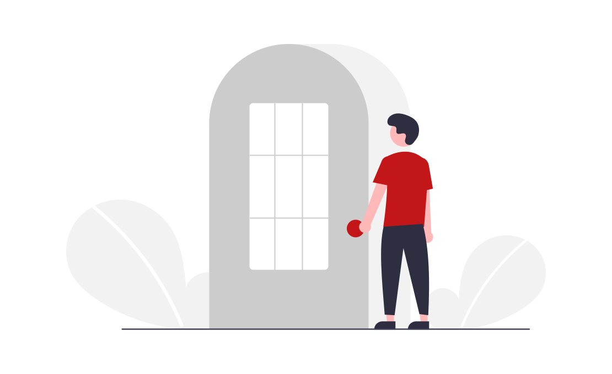

{{define "exit"}}
<!DOCTYPE html>
<html>
<head>
  <meta charset="utf-8">
    <meta http-equiv="X-UA-Compatible" content="IE=edge,chrome=1">
    <meta name="viewport" content="width=device-width, initial-scale=1"> 
    
</head>
<style>
.p {
  color:#710000;
   font-size: 25px ;
   position: absolute;
   margin-left: -30%;
   margin-top:-13%;
  
}

p{
margin-top:-3%;
position:absolute;  
font-size: 20px;

}

.box{
  width: 40%;
  height: 250px;  
  margin-top:1px;
  background-color:white;
  border: 1px solid white;
  box-shadow: 0 4px 8px 0 rgba(0, 0, 0, 0.2), 0 6px 20px 0 rgba(0, 0, 0, 0.19);
  display: flex;
  justify-content: center;
  align-items: center;
  border-radius:10px;
  
}
/*--------------------------------------------------------------------*/


button {
  padding: 20px 40px;
  background: none;
  border: none;
  position: relative;
  font-weight: bold;
  letter-spacing: 3px;
  cursor: pointer;
  margin-top: 25%;
 
}
button:after, button:before {
  content: "";
  position: absolute;
  top: 0;
  left: 0;
  bottom: 0;
  right: 0;
  border: 2px solid #000;
  transition: transform 0.2s;

}
button:after {
  transform: translate(3px, 3px);
}
button:before {
  transform: translate(-3px, -3px);
}
button:hover:after, button:hover:before {
  transform: translate(0);
}

/********************************************************************/

.wrapper {
  display: block;
  position: absolute;
  width: 100vw;
  height: 100vh;
  z-index: 2;
}

a,
a:visited,
a:focus {
  text-decoration: none;
  color: #ffffff;
}
.videoWrapper {
  display: block;
  float: left;
  margin-top: 30px;
}

#bg-animation {
  display: block;
  position: absolute;
  width: 100vw;
  height: 100vh;
  z-index: -1;
}


</style>
<body>
<center>
<link href="https://fonts.googleapis.com/css?family=Roboto:400,700" rel="stylesheet">

<!-- wrapper -->
<div class="wrapper">

  <canvas id="bg-animation"></canvas>


<!-- /wrapper -->


<div class="box">
  <p class="p" style="font-size:2vw;">Logout</p>
  <p style="margin-left:2%" style="font-size:1vw;">Are you sure you want to logout?</p>
  <button style="font-size:1vw;" style="top:-1%" onclick="window.location.href='/uf';">Cancel</button>
   &nbsp; &nbsp; &nbsp; &nbsp; &nbsp; &nbsp; &nbsp; &nbsp; &nbsp;
<button style="font-size:1vw;" onclick="window.location.href='/login';"> Logout</button>
</div>
</div>
 </center>

  <script type='text/javascript' src='//ajax.googleapis.com/ajax/libs/jquery/1.9.1/jquery.min.js?ver=1.9.1'></script>
  <script src="https://cdnjs.cloudflare.com/ajax/libs/gsap/1.19.0/TweenLite.min.js"></script>
  <script src="https://cdnjs.cloudflare.com/ajax/libs/gsap/1.19.0/easing/EasePack.min.js"></script>

  <script type='text/javascript' src='resources/scripts/bg-animation.js'></script>

  <script>

(function () {
  var width,
    height,
    canvas,
    ctx,
    points,
    target,
    animateHeader = true;
  var colorRGB = 128;

  // Main
  initHeader();
  initAnimation();
  addListeners();

  function initHeader() {
    width = window.innerWidth;
    height = window.innerHeight;
    target = { x: width / 2, y: height / 2 };

    canvas = document.getElementById("bg-animation");
    canvas.width = width;
    canvas.height = height;
    ctx = canvas.getContext("2d");

    // create points
    points = [];
    for (var x = 0; x < width; x = x + width / 20) {
      for (var y = 0; y < height; y = y + height / 20) {
        var px = x + (Math.random() * width) / 20;
        var py = y + (Math.random() * height) / 20;
        var p = { x: px, originX: px, y: py, originY: py };
        points.push(p);
      }
    }

    // for each point find the 5 closest points
    for (var i = 0; i < points.length; i++) {
      var closest = [];
      var p1 = points[i];
      for (var j = 0; j < points.length; j++) {
        var p2 = points[j];
        if (!(p1 == p2)) {
          var placed = false;
          for (var k = 0; k < 5; k++) {
            if (!placed) {
              if (closest[k] == undefined) {
                closest[k] = p2;
                placed = true;
              }
            }
          }

          for (var k = 0; k < 5; k++) {
            if (!placed) {
              if (getDistance(p1, p2) < getDistance(p1, closest[k])) {
                closest[k] = p2;
                placed = true;
              }
            }
          }
        }
      }
      p1.closest = closest;
    }

    // assign a circle to each point
    for (var i in points) {
      var c = new Circle(
        points[i],
        2 + Math.random() * 2,
        "rgba(255,255,255,0.3)"
      );
      points[i].circle = c;
    }
  }

  // Event handling
  function addListeners() {
    if (!("ontouchstart" in window)) {
      window.addEventListener("mousemove", mouseMove);
    }
    window.addEventListener("scroll", scrollCheck);
    window.addEventListener("resize", resize);
  }

  function mouseMove(e) {
    var posx = (posy = 0);
    if (e.pageX || e.pageY) {
      posx = e.pageX;
      posy = e.pageY - $(window).scrollTop();
      absolutePosy = e.pageY;
    } else if (e.clientX || e.clientY) {
      posx =
        e.clientX +
        document.body.scrollLeft +
        document.documentElement.scrollLeft;
      posy =
        e.clientY +
        document.body.scrollTop +
        document.documentElement.scrollTop;
    }

    target.x = posx;
    target.y = posy;

    if ($("body").hasClass("single-iaa_programs")) {
      if (absolutePosy > 800) {
        colorRGB = 128;
      } else {
        colorRGB = 255;
      }
    } else if ($("body").hasClass("page-template-default")) {
      if (absolutePosy > 600) {
        colorRGB = 128;
      } else {
        colorRGB = 255;
      }
    }
  }

  function scrollCheck() {}

  function resize() {
    width = window.innerWidth;
    height = window.innerHeight;
    ctx.canvas.width = width;
    ctx.canvas.height = height;
  }

  // animation
  function initAnimation() {
    animate();
    for (var i in points) {
      shiftPoint(points[i]);
    }
  }

  function animate() {
    if (animateHeader) {
      ctx.clearRect(0, 0, width, height);
      for (var i in points) {
        // detect points in range
        if (Math.abs(getDistance(target, points[i])) < 4000) {
          points[i].active = 0.3;
          points[i].circle.active = 0.6;
        } else if (Math.abs(getDistance(target, points[i])) < 20000) {
          points[i].active = 0.1;
          points[i].circle.active = 0.3;
        } else if (Math.abs(getDistance(target, points[i])) < 40000) {
          points[i].active = 0.02;
          points[i].circle.active = 0.1;
        } else {
          points[i].active = 0;
          points[i].circle.active = 0;
        }

        drawLines(points[i]);
        points[i].circle.draw();
      }
    }
    requestAnimationFrame(animate);
  }

  function shiftPoint(p) {
    TweenLite.to(p, 1 + 1 * Math.random(), {
      x: p.originX - 50 + Math.random() * 100,
      y: p.originY - 50 + Math.random() * 100,
      ease: Circ.easeInOut,
      onComplete: function () {
        shiftPoint(p);
      }
    });
  }

  // Canvas manipulation
  function drawLines(p) {
    if (!p.active) return;
    for (var i in p.closest) {
      ctx.beginPath();
      ctx.moveTo(p.x, p.y);
      ctx.lineTo(p.closest[i].x, p.closest[i].y);
      ctx.strokeStyle =
        "rgba(" +
        colorRGB +
        "," +
        colorRGB +
        "," +
        colorRGB +
        "," +
        p.active +
        ")";
      //            ctx.strokeStyle = 'rgba(156,217,249,'+ p.active+')';
      ctx.stroke();
    }
  }

  function Circle(pos, rad, color) {
    var _this = this;

    // constructor
    (function () {
      _this.pos = pos || null;
      _this.radius = rad || null;
      _this.color = color || null;
    })();

    this.draw = function () {
      if (!_this.active) return;
      ctx.beginPath();
      ctx.arc(_this.pos.x, _this.pos.y, _this.radius, 0, 2 * Math.PI, false);
      ctx.fillStyle =
        "rgba(" +
        colorRGB +
        "," +
        colorRGB +
        "," +
        colorRGB +
        "," +
        _this.active +
        ")";
      ctx.fill();
    };
  }

  // Util
  function getDistance(p1, p2) {
    return Math.pow(p1.x - p2.x, 2) + Math.pow(p1.y - p2.y, 2);
  }
})();


  </script>
</body>
</html>

{{end}}